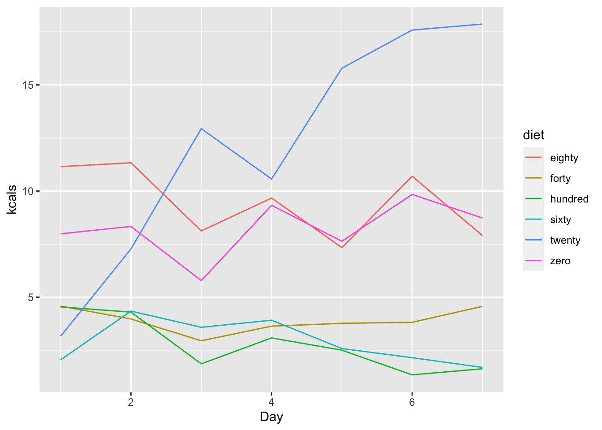
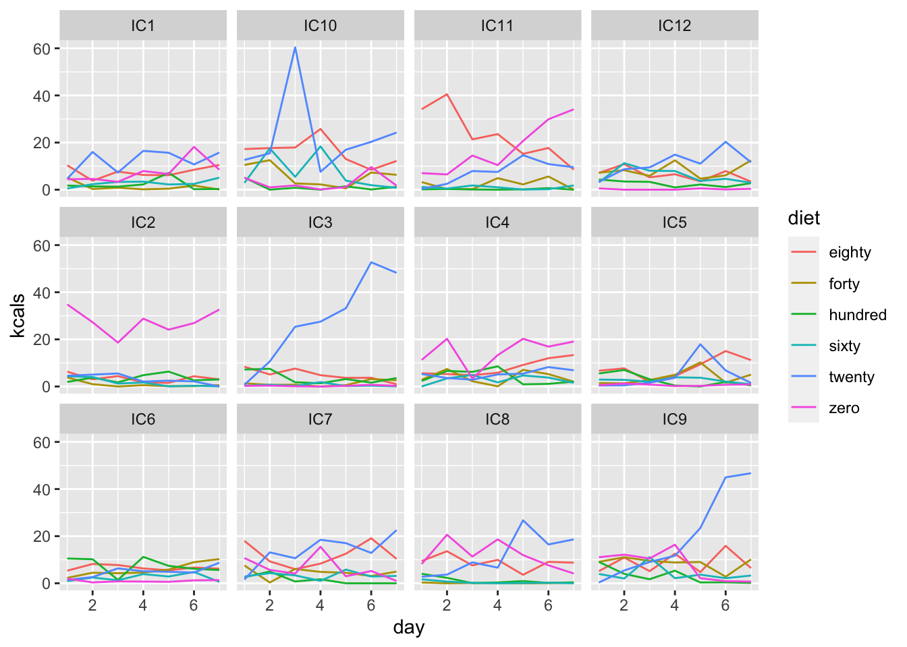
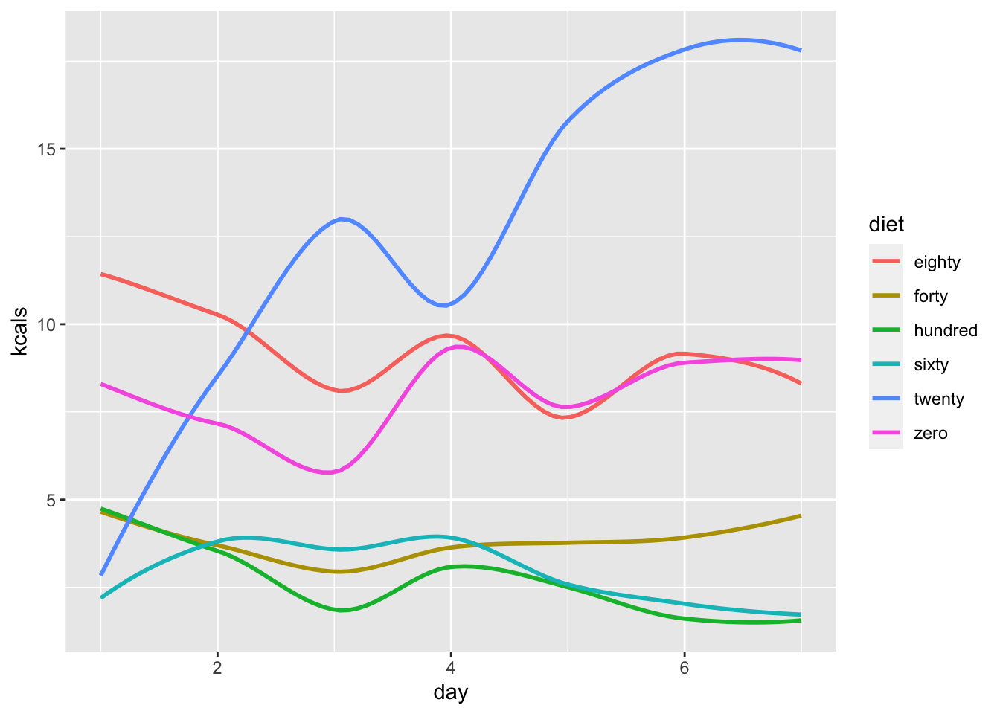
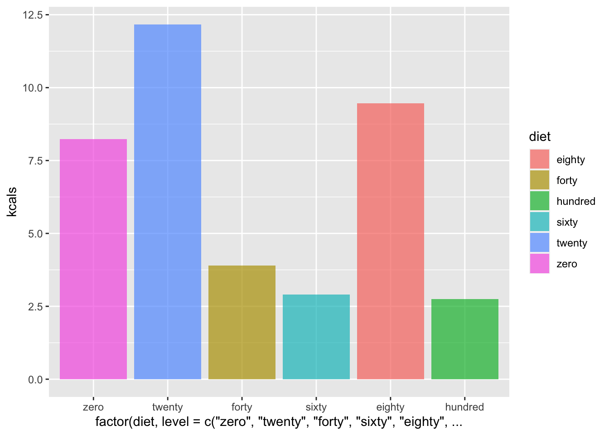
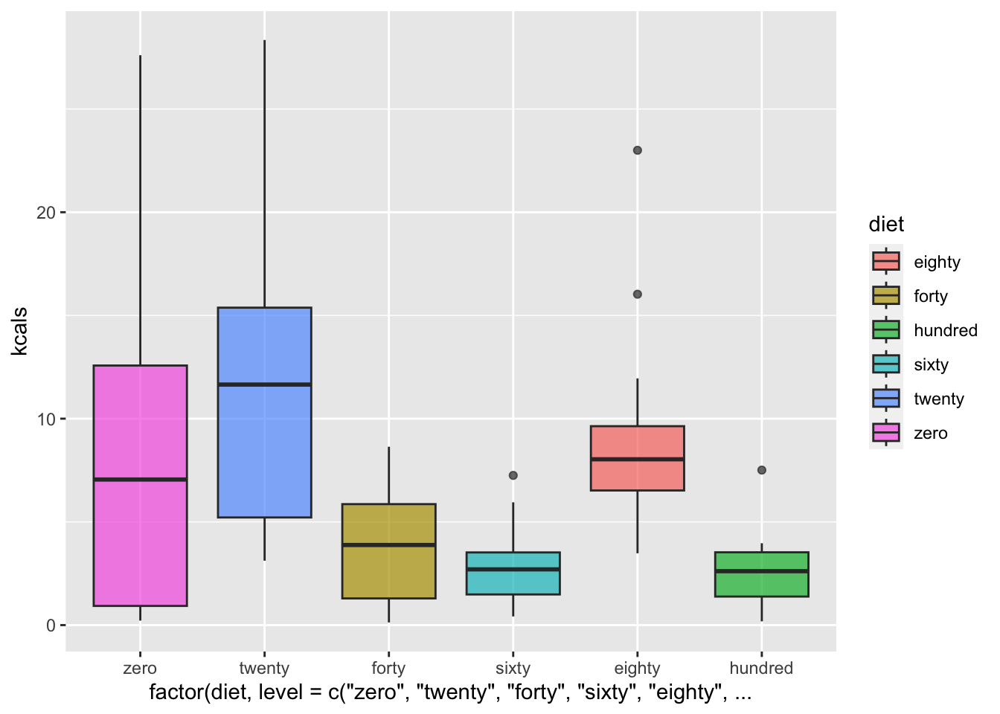
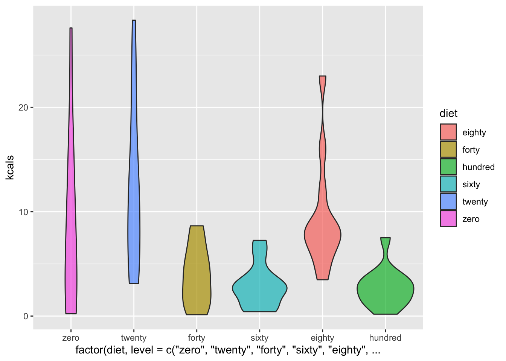
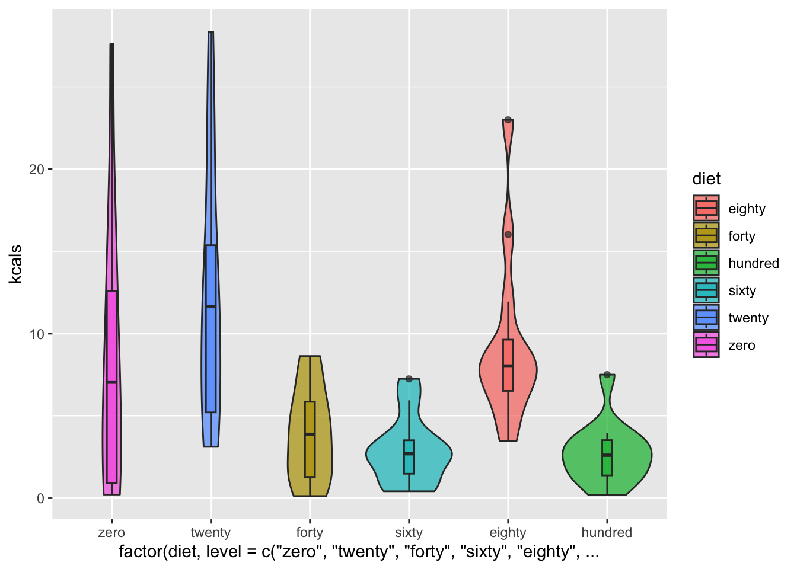
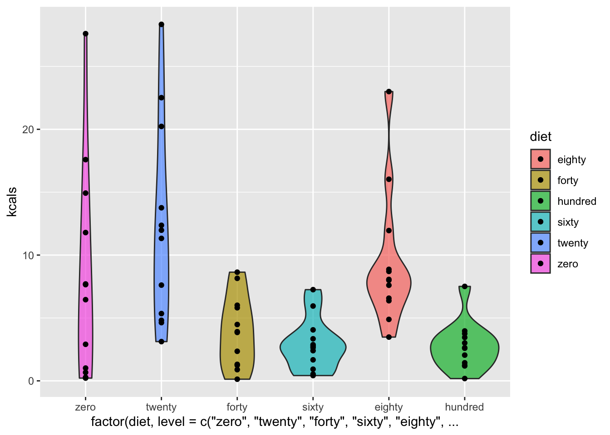

I want to use this portfolio to play around with some methods of visualizing the thesis data I’ve collected so far. I’ve already visualized some of it in previous projects, but I figure it will come in handy later to have taken some dedicated time to think about how to present my data graphically
Let’s get everything loaded and prepped:
library(tidyverse)
library(readxl)day_one <- read_excel("/Users/lawilson1999/Desktop/Data Science Spring 2023/Portfolio/p03/IC Diet Choice.xlsx",
sheet = 10,
col_names = TRUE)
day_two <- read_excel("/Users/lawilson1999/Desktop/Data Science Spring 2023/Portfolio/p03/IC Diet Choice.xlsx",
sheet = 11,
col_names = TRUE)
day_three <- read_excel("/Users/lawilson1999/Desktop/Data Science Spring 2023/Portfolio/p03/IC Diet Choice.xlsx",
sheet = 12,
col_names = TRUE)
day_four <- read_excel("/Users/lawilson1999/Desktop/Data Science Spring 2023/Portfolio/p03/IC Diet Choice.xlsx",
sheet = 13,
col_names = TRUE)
day_five <- read_excel("/Users/lawilson1999/Desktop/Data Science Spring 2023/Portfolio/p03/IC Diet Choice.xlsx",
sheet = 14,
col_names = TRUE)
day_six <- read_excel("/Users/lawilson1999/Desktop/Data Science Spring 2023/Portfolio/p03/IC Diet Choice.xlsx",
sheet = 15,
col_names = TRUE)
day_seven <- read_excel("/Users/lawilson1999/Desktop/Data Science Spring 2023/Portfolio/p03/IC Diet Choice.xlsx",
sheet = 16,
col_names = TRUE)
avg_kcal <- read_excel("/Users/lawilson1999/Desktop/Data Science Spring 2023/Portfolio/p03/IC Diet Choice.xlsx",
sheet = 17,
col_names = TRUE)
columns <- c('rat', 'zero', 'twenty', 'forty', 'sixty', 'eighty', 'hundred', 'water')
colnames(day_one) <- columns
colnames(day_two) <- columns
colnames(day_three) <- columns
colnames(day_four) <- columns
colnames(day_five) <- columns
colnames(day_six) <- columns
colnames(day_seven) <- columns
colnames(avg_kcal) <- columnsday_one <- day_one %>%
mutate(day = 1)
day_two <- day_two %>%
mutate(day = 2)
day_three <- day_three %>%
mutate(day = 3)
day_four <- day_four %>%
mutate(day = 4)
day_five <- day_five %>%
mutate(day = 5)
day_six <- day_six %>%
mutate(day = 6)
day_seven <- day_seven %>%
mutate(day = 7)
days <- list(day_one, day_two, day_three, day_four, day_five, day_six, day_seven)
all_days <- do.call("rbind", days)
all_days_kcal <- all_days
all_days_kcal$zero <- all_days_kcal$zero*9
all_days_kcal$twenty <- all_days_kcal$twenty*8
all_days_kcal$forty <- all_days_kcal$forty*7
all_days_kcal$sixty <- all_days_kcal$sixty*6
all_days_kcal$eighty <- all_days_kcal$eighty*5
all_days_kcal$hundred <- all_days_kcal$hundred*4And with that out of the way we can get started!
One of the arguments I’m making for the length of time we chose to train the animals is that it would hopefully result in stable food preferences by the time we got to testing. Let’s see if that’s true:
# Reformat data frames for ggplot
all_days_kcal_long <- all_days_kcal %>%
pivot_longer(cols = -c(rat, day),
names_to = "diet",
values_to = "kcals")
avg_kcal_long <- avg_kcal %>%
pivot_longer(cols = -c(rat),
names_to = "diet",
values_to = "kcals")
# Average intake over time
all_days_kcal_long %>%
filter(rat == "Avg") %>%
filter(diet != "water") %>%
ggplot(aes(x = day, y = kcals, color = diet)) +
geom_line()
So it looks like intake was fairly constant across days for all diets except for the 20% sugar diet, which seems to have increased across days on average. I wonder if that pattern actually holds up for the individual rats if I look at their data separately:
all_days_kcal_long %>%
filter(rat != "Avg") %>%
filter(diet != "water") %>%
ggplot(aes(x = day, y = kcals, color = diet)) +
geom_line() +
facet_wrap(~rat)
So it seems like there. were a few individuals whose consumption of the 20% diet spiked toward the end, but nothing too crazy. I still may double check my data entry though, just to make sure there weren’t any mistakes there.
Finally, let’s see if I like the look of
geom_smooth()better thangeom_line():
all_days_kcal_long %>%
filter(rat == "Avg") %>%
filter(diet != "water") %>%
ggplot(aes(x = day, y = kcals, color = diet)) +
geom_smooth(se = FALSE)## `geom_smooth()` using method = 'loess' and formula = 'y ~ x'
Purely aesthetically I like this better, but for the sake of accuracy I would probably include the line graph in my actual thesis or in a paper.
Next I want to try out ways to represent the preferred diet across animals, which was the main thing this part of the experiment was seeking to figure out. The most natural way to show this would probably be a bar graph:
avg_kcal_long %>%
filter(rat == "Avg") %>%
filter(diet != "water") %>%
ggplot(aes(x = factor(diet, level=c('zero', 'twenty', 'forty', 'sixty', 'eighty', 'hundred')), y = kcals, fill = diet)) +
geom_bar(stat = "identity", alpha = 0.7)
Generally I like this, but I wonder if there wouldn’t be a more creative way of showing the same thing. A box plot, maybe?
avg_kcal_long %>%
filter(rat != "Avg") %>%
filter(diet != "water") %>%
ggplot(aes(x = factor(diet, level=c('zero', 'twenty', 'forty', 'sixty', 'eighty', 'hundred')), y = kcals, fill = diet)) +
geom_boxplot(alpha = 0.7)
I don’t like the way this looks, but it does show well that there was much more variability in some of the diets than others. Again, perhaps reason to double check my data entry.
A violin plot?
avg_kcal_long %>%
filter(rat != "Avg") %>%
filter(diet != "water") %>%
ggplot(aes(x = factor(diet, level=c('zero', 'twenty', 'forty', 'sixty', 'eighty', 'hundred')), y = kcals, fill = diet)) +
geom_violin(alpha = 0.7) > I like these a lot! Nice to look at while also actually converying information. Maybe adding boxplots to these violin plots (or quartiles, or just the points themselves) would add something as well:
# add boxplots to violins
avg_kcal_long %>%
filter(rat != "Avg") %>%
filter(diet != "water") %>%
ggplot(aes(x = factor(diet, level=c('zero', 'twenty', 'forty', 'sixty', 'eighty', 'hundred')), y = kcals, fill = diet)) +
geom_violin(alpha = 0.7) +
geom_boxplot(alpha = 0.7, width = 0.1)
# add quartiles
avg_kcal_long %>%
filter(rat != "Avg") %>%
filter(diet != "water") %>%
ggplot(aes(x = factor(diet, level=c('zero', 'twenty', 'forty', 'sixty', 'eighty', 'hundred')), y = kcals, fill = diet)) +
geom_violin(alpha = 0.7, draw_quantiles = c(0.25, 0.5, 0.75))# add points
avg_kcal_long %>%
filter(rat != "Avg") %>%
filter(diet != "water") %>%
ggplot(aes(x = factor(diet, level=c('zero', 'twenty', 'forty', 'sixty', 'eighty', 'hundred')), y = kcals, fill = diet)) +
geom_violin(alpha = 0.7) +
geom_point()
I don’t like the box plots, but the quartiles and points both have promise!